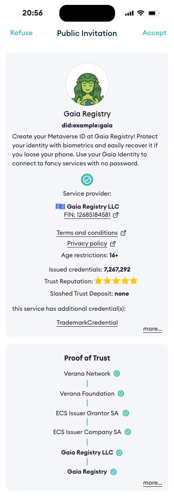

§ Verifiable Trust v3 Specification
Specification Status: Draft
Latest Draft: verana-labs/verifiable-trust-spec
- Editors:
- Contributors:
- Participate:
§ Abstract
The internet is broken. Existing communication channels are insecure and outdated. Because they rely on public identifiers — like email addresses, usernames, or phone numbers — anyone who knows your identifier can reach you, whether you invited them or not.
Worse, there’s no reliable way to verify the identity of either service providers or users. This leaves the door wide open to spam, phishing, fraud, and identity theft.
On the service side, each provider imposes its own fragmented registration process, often with complex password requirements or forced reliance on federated login systems, effectively handing control over to large third-party platforms.
Although the World Wide Web was originally built for openness and interoperability, dominant players have reshaped it into a closed, centralized system that most people and organizations now depend on. Privacy has become an afterthought, and personal data is routinely harvested, exploited, or leaked.
To rebuild a trustworthy internet, we need new communication channels - channels that are secure by design, based on mutual verification, and governed by decentralized trust.
Connecting to a service, proving who you are, or creating an account should be as simple and safe as presenting a verifiable credential.
A universal, open trust layer is essential for this vision to succeed.
That’s the purpose of Verifiable Trust.
§ About this Document
In order to fully understand the concepts developed in this document, you should have some basic knowledge of the ToIP stack, [[ref:DID]], [[ref:DIDComm]], [[ref:trust registry]], and more generally, all terms present in the Terminology section.
§ Conformance
As well as sections marked as non-normative, all authoring guidelines, diagrams, examples, and notes in this specification are non-normative. Everything else in this specification is normative. The key words MAY, MUST, MUST NOT, OPTIONAL, RECOMMENDED, REQUIRED, SHOULD, and SHOULD NOT in this document are to be interpreted as described in BCP 14 RFC2119 RFC8174 when, and only when, they appear in all capitals, as shown here.
§ Terminology
- [[def: credential schema, credential schemas]]:
- An [[ref: VPR]] resource which represents a verifiable credential definition and the associated permissions and business rules for issuing, verifying or holding a credential linked to this credential schema.
- [[def: decentralized identifier, DID, DIDs]]:
- A decentralized identifier, as specified in [[spec-norm:DID-CORE]].
- [[def: decentralized identifier communication, DIDComm]]:
- DIDComm uses [[ref: DIDs]] to establish confidential, ongoing connections.
- [[def: decentralized web nodes, DWN, dwn]]:
- Decentralized web nodes, see DIF spec
- [[def: decentralized identifier document, DID Document, DID Documents]]:
- A DID Document, as specified in [[spec-norm:DID-CORE]].
- [[def: verifiable public registry, VPR, VPRs]]:
- a public, normally decentralized network, which provides: trust registry features, that can be used by all its [[ref: participants]]: create trust registries, for each trust registry, define its credential schemas, who can issue, verify credential of a specific credential schema,… For more information, please refer to VPR Spec.
- [[def: verifiable service, VS, VSs]]:
- A service, identified by a resolvable [[ref: DID]] that can be deployed anywhere by its owner, and that is conforming to this spec and has a resolvable [[ref: proof of trust]]. This can be a [[ref: DIDComm]] service, a [[ref: DWN]] service, o any other service.
- [[def: verifiable user agent, VUA, VUAs]]:
- A user agent for accessing and using [[ref: VSs]]. To be considered a [[ref: VUA]], a user agent must conform and enforce this spec, such as presenting a proof of trust to end user before accepting connecting to [[ref: VS]] compliant services, and refuse connecting to not compliant services.
- [[def: essential credential schema, essential credential schemas]]:
- Default [[ref: credential schema]], owned by a [[ref: trust registry]], that provide the basis for a trust layer to exist in the ecosystem so that [[ref: VUA]] can generate a [[ref: proof of trust]].
- [[def: holder, holders]]:
- A role an entity might perform by possessing one or more verifiable credentials and generating verifiable presentations from them. A holder is often, but not always, a [[ref: subject]] of the verifiable credentials they are holding. Holders store their credentials in credential repositories. Example holders include organizations, persons, things.
- [[def: issuer, issuers]]:
- A role an entity can perform by asserting claims about one or more [[ref: subjects]], creating a verifiable credential from these claims, and transmitting the verifiable credential to a [[ref: holder]]. Example issuers include corporations, non-profit organizations, trade associations, governments, and individuals.
- [[def: json schema, json schemas]]:
- A json schema as defined in JSON-SCHEMA.
- [[def: json schema credential, json schema credentials]]:
- A json schema credential as defined in [[spec-norm:VC-JSON-SCHEMA]].
- [[def: linked-vp]]:
- A presentation of a [[ref: verifiable credential]] as specified in LINKED-VP.
- [[def: participant, participants]]:
- An entity that uses an [[ref: VPR]] and its trust layer to provide or use services.
- [[def: proof of trust]]:
- Visual representation using [[ref: essential credential schemas]] of a [[ref: trust resolution]] process of a [[ref: Verifiable Service]], for identifying the [[ref: VS]], its owner, and the [[ref: issuer]] of the verifiable credential of its owner.
- [[def: session]]:
- A session defines a connection to a DID Document provided service from a third party VS or VUA.
- [[def: subject, subjects]]:
- A thing about which claims are made. Example subjects include human beings, animals, things, and organization, a [[ref: DID]]…
- [[def:trust registry, trust registries]]
- An approved list of [[ref: issuers]] and [[ref: verifiers]] that are authorized to issue/verify certain credentials in an ecosystem.
- [[def: trust resolution]]:
- Process run by, for example a [[ref: VUA]] or a [[ref: VS]], which purpose is to recursively resolve [[ref: DID]] by digging into [[ref: DID Documents]] and look for [[ref: linked-vp]] entries and their [[ref: issuer]] [[ref: DIDs]], and trust-registry entries to gather whether the service provided by the [[ref: DID]] is trustable (and legitimate), or not.
- [[def: verifier, verifiers]]:
- A role an entity performs by receiving one or more verifiable credentials, optionally inside a verifiable presentation for processing. Example verifiers include service providers.
- [[def: verifiable credential, verifiable credentials]]:
- A verifiable credential as defined in [[spec-norm:VC-DATA-MODEL]].
§ Understanding Verifiable Trust
This section is non-normative.
When a user is invited to connect to a service, a verifiable trust-compliant user agent performs trust resolution on the service, presents the resulting Proof-of-Trust to the user, and prompts them to either accept or refuse the connection.

Trust Resolution is as simple as calling a method passing the DID of the service we want to resolve, to display a Proof-of-Trust to the end-user:
resolve_trust("did:example:gaia")
and receive a response similar to this one:
{
"did":"did:example:gaia",
"verified": true,
"service_provider": {
"id": "did:example:def",
"type": "Organization",
"name": "Gaia Registry LLC",
"country": "zz",
"reputation": {
"issuedCredentials": 1234,
"verifiedCredentials": 7678,
"trustDepositValue": 176327.124356,
"amountSlashed": 0,
"stars": 5.0
},
"issuer": "did:example:zzz",
...
},
"service": {
"name": "Gaia Registry",
"termsAndConditions": "http://example.com",
"privacyPolicy": "http://example.com",
"minimumAgeRequired": 16,
"description": "Create your Metaverse ID at Gaia Registry! Protect your identity with biometrics and easily recover it if you loose your phone. Use your Gaia Identity to connect to fancy services with no password."
...
},
"credentials" : [
{
"type": "TrademarkCredential",
...
}
]
...
}
Let’s explain how the Verifiable Trust does it.

The core idea behind Verifiable Trust is simple: trust should not be implicit, but it should be verifiable, transparent, and decentralized.
In this example, a Verifiable Service (VS) presents several Verifiable Credentials to prove:
- Who operates the service, using an Essential Credential Schema (ECS) Service Verifiable Trust Credential (data shown in red)
- What the service offers, using another ECS Service Verifiable Trust Credential (data shown in blue)
- Trademark information, using a Trademark Verifiable Trust Credential (data shown in green)
Additionally, the Verifiable Service presents computed reputation information (data shown in black). While this reputation data may support trust decisions, it is not directly defined by this specification. Refer to the VPR Spec for more information.
Verifiable Trust introduces the following core concepts:
- Verifiable Service (VS)
- Verifiable User Agent (VUA)
- Verifiable Public Registry (VPR)
- Verifiable Trust Credentials
- Essential Credential Schemas (ECS)
The Proof-of-Trust is established by recursively resolving the credentials presented by (in this example) a service. What makes this trust verifiable is the use of cryptographic mechanisms built into Decentralized Identifiers (DIDs) and Verifiable Credentials, as applied across these five key concepts.
Because these concepts are deeply interdependent, you may need to explore them together, and revisit them several times to fully grasp the Verifiable Trust model.
§ What is a Verifiable Service (VS)?
This section is non-normative.
A Verifiable Service (VS) is a service capable of identifying itself to a peer before any connection is established.
Peers wishing to connect to a VS can review the Verifiable Credentials presented by the service, verify their legitimacy through trust resolution, and decide whether to proceed with the connection based on the outcome.
A VS is also required to verify the trustworthiness of peers attempting to connect to it, whether those peers are other Verifiable Services (VS) or Verifiable User Agents (VUA), and must reject connections from non-verifiable peers.
Furthermore, if a Verifiable Service wants to issue credentials or request credential presentation, it must first prove that it is authorized to perform these actions. Otherwise, the peer must refuse the request.
§ What is a Verifiable User Agent (VUA)?
This section is non-normative.
A Verifiable User Agent (VUA) is software, such as a browser, app, or wallet, designed to connect with Verifiable Services (VS) and other VUAs. When establishing connections, a VUA must verify the identity and trustworthiness of its peers and allow connections only to compliant VS or VUA peers.
As part of this process, the VUA must perform trust resolution by:
- Verifying the Verifiable Credentials presented by the peers
- Querying Verifiable Public Registries (VPRs) to confirm that these credentials were issued by recognized and authorized issuers.
This ensures that all connections are based on verifiable trust, not assumptions.
§ What is a Verifiable Public Registry (VPR)?
There is a separated VPR spec. The following summarizes the main features of a VPR.
This section is non-normative.
A Verifiable Public Registry (VPR) is a “registry of registries”, a public service that provides foundational infrastructure for decentralized trust ecosystems. It offers:
-
Trust Registry Management:
Ecosystems can create and manage their own Trust Registries, each with:- Defined Credential Schemas
- Assigned roles for Issuers, Verifiers, and Grantors (Trust Registry Operators)
- Custom business models and permission policies
-
Query API for Trust Resolution:
A standardized API used by Verifiable Services (VSs) and Verifiable User Agents (VUAs) to perform trust resolution, enabling them to query registry data and validate roles and permissions in real time. Query API must include support for the TRQP.
§ Trust Registries
This section is non-normative.
Each Trust Registry must provide, at a minimum:
- an Ecosystem controlled resolvable DID
- One or more Governance Framework document(s)
- Zero or more Credential Schemas
The Verifiable Public Registry (VPR) is agnostic to the specific DID methods used. Trust resolution is performed externally, outside the VPR, allowing flexibility and interoperability across ecosystems.
§ Credential Schemas
This section is non-normative.
Credential Schemas are created and managed by trust registry controller (Ecosystems). Each Credential Schema includes, at a minimum:
- A JSON Schema that defines the structure of the corresponding Verifiable Credential
- A PermissionManagementMode for issuance policy, which determines how
Issuerpermissions are granted. Modes include:OPEN: Anyone can become an IssuerECOSYSTEM: Permissions are granted directly by the Ecosystem, the trust registry controllerGRANTOR_VALIDATION: Permissions are granted by one or severalIssuer Grantor(s)(trust registry operator(s) responsible for selecting issuers for the ecosystem), selected by the Ecosystem.
- A PermissionManagementMode for verification policy, which determines how
Verifierpermissions are granted. Modes include:OPEN: Anyone can act as a VerifierECOSYSTEM: Permissions are granted directly by the Ecosystem, the trust registry controllerGRANTOR_VALIDATION: Permissions are granted by one or severalVerifier Grantor(s)(trust registry operator(s) responsible for selecting verifiers for the ecosystem), selected by the Ecosystem.
- A Permission Tree that defines the roles and relationships involved in managing the schema’s lifecycle.
Participant roles are defined in the table below:
| Participant Role | Description |
|---|---|
| Ecosystem | Create and control trust registries and credential Schemas. Recognize other participants by granting permission(s) to them. |
| Issuer Grantor | Trust Registry operator that grants Issuer permissions to candidate issuers. |
| Verifier Grantor | Trust Registry operator that grants Verifier permissions to candidate verifiers. |
| Issuer | Can issue credentials of this schema. |
| Verifier | Can request presentation of credentials of this schema. |
| Holder | Holds a credential. |
Example of a Json Schema credential schema:
{
"$id": "vpr:verana:vna-mainnet-1/cs/v1/js/VPR_CREDENTIAL_SCHEMA_ID",
"$schema": "https://json-schema.org/draft/2020-12/schema",
"title": "ExampleCredential",
"description": "ExampleCredential using JsonSchema",
"type": "object",
"properties": {
"credentialSubject": {
"type": "object",
"properties": {
"id": {
"type": "string",
"format": "uri"
},
"firstName": {
"type": "string",
"minLength": 0,
"maxLength": 256
},
"lastName": {
"type": "string",
"minLength": 1,
"maxLength": 256
},
"expirationDate": {
"type": "string",
"format": "date"
},
"countryOfResidence": {
"type": "string",
"minLength": 2,
"maxLength": 2
}
},
"required": [
"id",
"lastName",
"birthDate",
"expirationDate",
"countryOfResidence"
]
}
}
}
§ Verifiable Trust Credentials
Data stored in a VPR is not verified at the time of storage, nor does it need to be. Verification happens outside the scope of the VPR.
This is not a limitation, it’s a feature. For example, any DID method can be used, and the VPR will never attempt to resolve or validate DIDs itself.
The VPR provides registrations, not validations, leaving trust decisions and verification where they belong: with the relying parties.
To make things verifiable, for a given credential schema:
- Ecosystem creates a Credential Json Schema in a VPR, linked to its Ecosystem DID.
- Ecosystem issues, with its DID, a Json Schema Credential linked to its credential Json Schema in the VPR
- Then, authorized issuers can issue Verifiable Trust Credentials linked to the Json Schema Credential issued by Ecosystem DID.
.
§ Json Schema Credentials
This section is non-normative.
To prove that data stored in a VPR, such as a credential json schema, is authentic, after creating the JSON Schema, the Ecosystem owner of the Trust Registry issues a JSON Schema Credential using the DID registered as the Trust Registry’s Ecosystem identifier in the VPR.
This credential serves as a verifiable proof of:
- Ownership of the Credential Schema
- Control over the corresponding Trust Registry Ecosystem DID.
{
"@context": [
"https://www.w3.org/ns/credentials/v2"
],
"id": "https://ecosystem/shemas-example-jsc.json",
"type": ["VerifiableCredential", "JsonSchemaCredential"],
"issuer": "did:example:ecosystem",
"issuanceDate": "2024-01-01T19:23:24Z",
"credentialSchema": {
"id": "https://www.w3.org/ns/credentials/json-schema/v2.json",
"type": "JsonSchema",
"digestSRI": "sha384-S57yQDg1MTzF56Oi9DbSQ14u7jBy0RDdx0YbeV7shwhCS88G8SCXeFq82PafhCrW"
},
"credentialSubject": {
"id": "vpr:verana:vna-mainnet-1/cs/v1/js/12345678",
"type": "JsonSchema",
"jsonSchema": {
"$ref": "vpr:verana:vna-mainnet-1/cs/v1/js/12345678"
},
"digestSRI": "sha384-ABCSGyugst67rs67rdbugsy0RDdx0YbeV7shwhCS88G8SCXeFq82PafhCeZ"
}
}
Finally, the Ecosystem must publish the JSON Schema Credential within the DID Document associated with the declared Trust Registry Ecosystem DID in the VPR.
This ensures that the Credential Schema and its controlling Trust Registry are publicly discoverable and cryptographically verifiable.
"service": [
{
"id": "did:example:ecosystem#vpr-schemas-example-jsc-vp",
"type": "LinkedVerifiablePresentation",
"serviceEndpoint": ["https://ecosystem/schemas-example-jsc-vp.json"]
}
...
]
§ Issuing Verifiable Trust Credentials
This section is non-normative.
Once the Ecosystem has:
- Created its Credential Schemas in the VPR
- Issued the corresponding JSON Schema Credentials
- Properly configured the
"service"section of its Ecosystem DID Document
it is now possible to issue Verifiable Credentials based on these schemas.
Credentials that comply with the Verifiable Trust Specification are referred to as Verifiable Trust Credentials (VTC). These credentials must include, in their credentialSchema attribute, a reference to the corresponding JSON Schema Credential issued by the Trust Registry Ecosystem DID. This linkage ensures cryptographic proof of the schema’s origin and trustworthiness.
In our previous example, that would mean and ExampleCredential should look like this example:
{
"@context": [
"https://www.w3.org/ns/credentials/v2"
],
"id": "did:example:holder",
"type": ["VerifiableCredential", "VerifiableTrustCredential", "ExampleCredential"],
"issuer": "did:example:authorized-issuer",
"credentialSubject": {
"id": "did:example:holder",
...
},
...
"credentialSchema": {
"id": "https://ecosystem/schemas-example-jsc.json",
"type": "JsonSchemaCredential"
}
}
§ Essential Credential Schemas
Finally, the last concept: to enable fundamental trust operations, such as identifying service providers, service names, and related entities, we define a set of Essential Credential Schemas (ECS) specifically designed for these purposes:
- Service: describes services;
- Organization: identifies organizations, used to identify owner of a Service;
- Persona: identifies individuals used to identify owner of a Service;
- User Agent: describes user agents, such as browsers, mobile apps, and similar software
With the Verifiable Trust concept now clearly established, we’re ready to dive into the specifications.
§ Specification
§ [VT-JSON-SCHEMA-CRED] Verifiable Trust Json Schema Credential
A Verifiable Trust Json Schema Credential is a [[ref: json schema credential]] self-issued by a Trust Registry Ecosystem DID, that MUST refer to the json schema of a CredentialSchema entry created in a VPR. Issuer of the Verifiable Trust Json Schema Credential MUST be the same DID that the Ecosystem DID of the TrustRegistry entry created in the [[ref: VPR]] than owns the CredentialSchema entry in the [[ref: VPR]].
A Verifiable Trust Json Schema Credential MUST have a credentialSchema property that contains exactly the following:
"credentialSchema": {
"id": "https://www.w3.org/ns/credentials/json-schema/v2.json",
"type": "JsonSchema",
"digestSRI": "sha384-S57yQDg1MTzF56Oi9DbSQ14u7jBy0RDdx0YbeV7shwhCS88G8SCXeFq82PafhCrW"
}
Additionally, it MUST have a credentialSubject object with:
- a
idproperties that is the URL to access the [[ref: json schema]] in the VPR, typeMUST be set to “JsonSchema”,- an object
jsonSchemaMUST be present with an$refproperties that is the URL to access the [[ref: json schema]] in the VPR - a digestSRI property that MUST match the [[ref: json schema]] file content hash.
Example of a Verifiable Trust Json Schema Credential:
{
"@context": [
"https://www.w3.org/ns/credentials/v2"
],
"id": "https://ecosystem/schemas-example-jsc.json",
"type": ["VerifiableCredential", "JsonSchemaCredential", "VerifiableTrustJsonSchemaCredential"],
"issuer": "did:example:ecosystem",
"issuanceDate": "2024-01-01T19:23:24Z",
"credentialSchema": {
"id": "https://www.w3.org/ns/credentials/json-schema/v2.json",
"type": "JsonSchema",
"digestSRI": "sha384-S57yQDg1MTzF56Oi9DbSQ14u7jBy0RDdx0YbeV7shwhCS88G8SCXeFq82PafhCrW"
},
"credentialSubject": {
"id": "vpr:verana:vna-mainnet-1/cs/v1/js/12345678",
"type": "JsonSchema",
"jsonSchema": {
"$ref": "vpr:verana:vna-mainnet-1/cs/v1/js/12345678"
},
"digestSRI": "sha384-ABCSGyugst67rs67rdbugsy0RDdx0YbeV7shwhCS88G8SCXeFq82PafhCeZ"
}
}
§ [VT-ECOSYSTEM-DIDDOC] Ecosystem DID Document
For each CredentialSchema entry an Ecosystem has created in his Trust Registry in a [[ref: VPR]], the Ecosystem MUST self-issue the corresponding Verifiable Trust Json Schema Credential as specified in [VT-JSON-SCHEMA-CRED].
Additionally, in MUST present (as a [[ref: linked-vp]]) the Verifiable Trust Json Schema Credential(s) in its DID Document, as well as the corresponding VPR entry for verification. To do so, it MUST define the following entries in its DID Document:
- for each
CredentialSchemaentry it wants to be resolvable, a “LinkedVerifiablePresentation” service entry with a fragment that MUST start with#vpr-schemas, that MUST point to a self-issued Verifiable Trust Json Schema Credential as specified in [VT-JSON-SCHEMA-CRED].
Example:
"service": [
{
"id": "did:example:ecosystem#vpr-schemas-example-jsc-vp",
"type": "LinkedVerifiablePresentation",
"serviceEndpoint": ["https://ecosystem/schemas-example-jsc-vp.json"]
}
...
]
§ [VT-CRED] Verifiable Trust Credential
A Verifiable Trust Credential MUST have a credentialSchema property:
idmust point to a [[ref: json schema credential]] issued by the trust registry [[ref: DID]] owner of the schema in the VPR;typeMUST beJsonSchemaCredential.
As a matter of fact, a Verifiable Trust Credential MUST conform to the dereferenced [[ref: json schema]] of the JsonSchemaCredential.
Example:
{
"@context": [
"https://www.w3.org/ns/credentials/v2"
],
"id": "did:example:holder",
"type": ["VerifiableCredential", "VerifiableTrustCredential", "ExampleCredential"],
"issuer": "did:example:authorized-issuer",
"credentialSubject": {
"id": "did:example:holder",
...
},
...
"credentialSchema": {
"id": "https://ecosystem/schemas-example-jsc.json",
"type": "JsonSchemaCredential"
}
}
§ [VT-LINKED-VP] Verifiable Trust Credential Linked VP
A DID Document MAY present an unlimited number of Verifiable Trust Credential as Linked-VPs. Linked-VPs MUST be signed by the DID controller of the DID Document, and MUST be declared with a fragment that starts with #vpr-schemas- and ends with -c-vp. Example:
"service": [
{
"id": "did:example:ecosystem#vpr-schemas-example-c-vp",
"type": "LinkedVerifiablePresentation",
"serviceEndpoint": ["https://ecosystem/schemas-example-c-vp.json"]
}
...
]
§ [ECS] Essential Credential Schemas
Essential Credential Schemas are the Verifiable Trust basic needed schemas for enabling a minimum trust resolution in Services and User Agents by answering these questions:
- who is the provider of this Verifiable Service?
- what is the minimum age required to access this Verifiable Service?
- is the User Agent trying to connect to a Verifiable Service a Verifiable User Agent?
- …
Ecosystems can create Essential Credential Schemas (ECS) by creating a Trust Registry in a [[ref: VPR]]. There are 4 kinds of ECS:
- Service;
- Organization;
- Persona;
- UserAgent.
An Ecosystem creates its Trust Registry in a [[ref: VPR]] by creating a TrustRegistry entry tr. For this Trust Registry to qualify for being used for trust resolution in [[ref: VSs]] and [[ref: VUAs]], it MUST provide, associated to the TrustRegistry entry tr, at least one CredentialSchema entry, with a respective json_schema attribute defined as follows in [ECS-SERVICE], [ECS-ORG], [ECS-PERSONA], [ECS-UA].
§ [ECS-SERVICE] Service Credential Json Schema
Used to identify Services.
Credential subject object of schema MUST contain the following attributes:
id(string) (mandatory): the [[ref: DID]] of the service the credential will be issued to.name(string) (mandatory): service name. UTF8 charset, max length: 512 bytes.type(string) (mandatory): service type. UTF8 charset, max length: 128 bytes. Service types will be defined later.description(string) (mandatory): service description. UTF8 charset, max length: 4096 bytes.logo(image) (mandatory): the logo of the service, as it will be shown in browsers, apps, search engines…minimumAgeRequired(integer) (mandatory): minimum required age to connect to service. Allowed value: 0 to 255. Used by browsers that provide a simple birth date based parental control.termsAndConditions(string) (mandatory): URL of the terms and conditions of the service. It is recommended to store terms and conditions in a file, in a repository that allows file hash verification (IPFS).termsAndConditionsHash(string) (optional): If terms and conditions of the service are stored in a file, optional hash of the file for data integrity verification.privacyPolicy(string) (mandatory): URL of the terms and conditions of the service. MAY be the same URL thatterms_and_conditionsif file are combined. It is recommended to store privacy policy in a file repository that allows file hash verification (IPFS).privacyPolicyHash(string) (optional): If privacy policy of the service are stored in a file, optional hash of the file for data integrity verification.
the resulting json_schema attribute will be the following Json Schema.
VPR_CREDENTIAL_SCHEMA_IDis replaced by theschema_idof the createdCredentialSchemaentry in the VPR.
{
"$id": "vpr:verana:vna-mainnet-1/cs/v1/js/VPR_CREDENTIAL_SCHEMA_ID",
"$schema": "https://json-schema.org/draft/2020-12/schema",
"title": "ServiceCredential",
"description": "ServiceCredential using JsonSchema",
"type": "object",
"properties": {
"credentialSubject": {
"type": "object",
"properties": {
"id": {
"type": "string",
"format": "uri"
},
"name": {
"type": "string",
"minLength": 1,
"maxLength": 512
},
"type": {
"type": "string",
"minLength": 1,
"maxLength": 128
},
"description": {
"type": "string",
"minLength": 0,
"maxLength": 4096
},
"logo": {
"type": "string",
"contentEncoding": "base64",
"contentMediaType": "image/png"
},
"minimumAgeRequired": {
"type": "number",
"minimum": 0,
"exclusiveMaximum": 150
},
"termsAndConditions": {
"type": "string",
"format": "uri",
"maxLength": 2048
},
"termsAndConditionsHash": {
"type": "string"
},
"privacyPolicy": {
"type": "string",
"format": "uri",
"maxLength": 2048
},
"privacyPolicyHash": {
"type": "string"
}
},
"required": [
"id",
"name",
"type",
"description",
"logo",
"minimumAgeRequired",
"termsAndConditions",
"privacyPolicy"
]
}
}
}
§ [ECS-ORG] OrganizationCredential Json Schema
Used to identify Verifiable Services run by Organizations.
Credential subject object of schema MUST contain the following attributes:
id(string) (mandatory): the [[ref: DID]] of the service the credential has been issued to, which is the subject of the [[ref: verifiable credential]].name(string) (mandatory): name of the organization.logo(image) (mandatory): the logo of the organization, as it will be shown in browsers and search engines.registryId(string) (mandatory): registry id of the organization.registryUrl(string) (optional): link to registry data.address(string) (mandatory): address of the organization.type(string) (mandatory): type of organization. PUBLIC, PRIVATE, FOUNDATION.countryCode(string) (mandatory): country where the company is registered.
the resulting json_schema attribute will be the following Json Schema.
VPR_CREDENTIAL_SCHEMA_IDis replaced by theschema_idof the createdCredentialSchemaentry in the VPR.
{
"$id": "vpr:verana:vna-mainnet-1/v1/cs/js/VPR_CREDENTIAL_SCHEMA_ID",
"$schema": "https://json-schema.org/draft/2020-12/schema",
"title": "OrganizationCredential",
"description": "OrganizationCredential using JsonSchema",
"type": "object",
"properties": {
"credentialSubject": {
"type": "object",
"properties": {
"id": {
"type": "string",
"format": "uri"
},
"name": {
"type": "string",
"minLength": 0,
"maxLength": 256
},
"logo": {
"type": "string",
"contentEncoding": "base64",
"contentMediaType": "image/png"
},
"registryId": {
"type": "string",
"minLength": 0,
"maxLength": 256
},
"registryUrl": {
"type": "string",
"minLength": 0,
"maxLength": 256
},
"address": {
"type": "string",
"minLength": 0,
"maxLength": 1024
},
"type": {
"type": "string",
"enum": ["PUBLIC", "PRIVATE", "FOUNDATION"]
},
"countryCode": {
"type": "string",
"minLength": 2,
"maxLength": 2
}
},
"required": [
"id",
"name",
"logo",
"registryId",
"registryUrl",
"address",
"type",
"countryCode"
]
}
}
}
§ [ECS-PERSONA] Persona Credential Json Schema
Used to identify Verifiable Services run by Personas.
Credential subject object of schema MUST contain the following attributes:
id(string) (mandatory): the [[ref: DID]] the credential has been issued to.name(string) (mandatory): name of the persona.description(string) (optional): description of the persona.avatar(image) (optional): the avatar of this person, as it will be shown in browsers and search engines.countryOfResidence(string[2]) (mandatory): country of residence, for jurisdiction rule enforcement (moderation related).
the resulting json_schema attribute will be the following Json Schema.
VPR_CREDENTIAL_SCHEMA_IDis replaced by theschema_idof the createdCredentialSchemaentry in the VPR.
{
"$id": "vpr:verana:vna-mainnet-1/v1/cs/js/VPR_CREDENTIAL_SCHEMA_ID",
"$schema": "https://json-schema.org/draft/2020-12/schema",
"title": "PersonaCredential",
"description": "PersonaCredential using JsonSchema",
"type": "object",
"properties": {
"credentialSubject": {
"type": "object",
"properties": {
"id": {
"type": "string",
"format": "uri"
},
"name": {
"type": "string",
"minLength": 1,
"maxLength": 256
},
"description": {
"type": "string",
"minLength": 0,
"maxLength": 16384
},
"avatar": {
"type": "string",
"contentEncoding": "base64",
"contentMediaType": "image/png"
},
"countryOfResidence": {
"type": "string",
"minLength": 2,
"maxLength": 2
}
},
"required": [
"id",
"name",
"countryOfResidence"
]
}
}
}
§ [ECS-UA] User Agent Credential Json Schema
Credential subject object of schema MUST contain the following attributes:
id(string) (mandatory): the [[ref: DID]] of the user agent the credential will be issued to.name(string) (mandatory): agent name. UTF8 charset, max length: 512 bytes.description(string) (mandatory): agent description. UTF8 charset, max length: 4096 bytes.category(string) (mandatory): the category of the agent, ie SOCIAL_NETWORK,…logo(image) (mandatory): the logo of the agent, as it will be shown in search engines.wallet(boolean) (mandatory): If the agent provides verifiable credential wallet features.termsAndConditions(string) (mandatory): URL of the terms and conditions of the service. It is recommended to store terms and conditions in a file, in a repository that allows file hash verification (IPFS).termsAndConditionsHash(string) (optional): If terms and conditions of the service are stored in a file, optional hash of the file for data integrity verification.privacyPolicy(string) (mandatory): URL of the terms and conditions of the service. MAY be the same URL thatterms_and_conditionsif file are combined. It is recommended to store privacy policy in a file repository that allows file hash verification (IPFS).privacyPolicyHash(string) (optional): If privacy policy of the service are stored in a file, optional hash of the file for data integrity verification.
the resulting json_schema attribute will be the following Json Schema.
VPR_CREDENTIAL_SCHEMA_IDis replaced by theschema_idof the createdCredentialSchemaentry in the VPR.
{
"$id": "vpr:verana:vna-mainnet-1/v1/cs/js/VPR_CREDENTIAL_SCHEMA_ID",
"$schema": "https://json-schema.org/draft/2020-12/schema",
"title": "UserAgentCredential",
"description": "UserAgentCredential using JsonSchema",
"type": "object",
"properties": {
"credentialSubject": {
"type": "object",
"properties": {
"id": {
"type": "string",
"format": "uri"
},
"name": {
"type": "string",
"minLength": 1,
"maxLength": 512
},
"description": {
"type": "string",
"minLength": 0,
"maxLength": 4096
},
"category": {
"type": "string",
"minLength": 1,
"maxLength": 128
},
"logo": {
"type": "string",
"contentEncoding": "base64",
"contentMediaType": "image/png"
},
"wallet": {
"type": "boolean"
},
"termsAndConditions": {
"type": "string",
"format": "uri",
"maxLength": 2048
},
"termsAndConditionsHash": {
"type": "string"
},
"privacyPolicy": {
"type": "string",
"format": "uri",
"maxLength": 2048
},
"privacyPolicyHash": {
"type": "string"
}
},
"required": [
"id",
"name",
"description",
"category",
"logo",
"wallet",
"termsAndConditions",
"privacyPolicy"
]
}
}
}
§ [VT-ECS-JSON-SCHEMA-CRED] Essential Schema Json Schema Credentials
- Json Schema Credential [VT-ECS-SERVICE-JSON-SCHEMA-CRED]: a [VT-JSON-SCHEMA-CRED] linked to a Json Schema of a CredentialSchema entry that conforms to [ECS-SERVICE].
- Json Schema Credential [VT-ECS-ORG-JSON-SCHEMA-CRED]: a [VT-JSON-SCHEMA-CRED] linked to a Json Schema of a CredentialSchema entry that conforms to [ECS-ORG].
- Json Schema Credential [VT-ECS-PERSONA-JSON-SCHEMA-CRED]: a [VT-JSON-SCHEMA-CRED] linked to a Json Schema of a CredentialSchema entry that conforms to [ECS-PERSONA].
- Json Schema Credential [VT-ECS-UA-JSON-SCHEMA-CRED]: a [VT-JSON-SCHEMA-CRED] linked to a Json Schema of a CredentialSchema entry that conforms to [ECS-UA].
§ [VT-ECS-CRED] Verifiable Trust Essential Schema Credentials
- Service Credential [VT-ECS-SERVICE-CRED]: a [VT-CRED] linked to a [VT-ECS-SERVICE-JSON-SCHEMA-CRED]. MUST be declared in DID Document with a “LinkedVerifiablePresentation” service entry with fragment
#vpr-ecs-service-c-vp. Example:
"service": [
{
"id": "did:example:service#vpr-ecs-service-c-vp",
"type": "LinkedVerifiablePresentation",
"serviceEndpoint": ["https://service/ecs-service-c-vp.json"]
}
...
]
- Organization Credential [VT-ECS-ORG-CRED]: a [VT-CRED] linked to a [VT-ECS-ORG-JSON-SCHEMA-CRED]. MUST be declared in DID Document with a “LinkedVerifiablePresentation” service entry with fragment
#vpr-ecs-org-c-vp. Example:
"service": [
{
"id": "did:example:service#vpr-ecs-org-c-vp",
"type": "LinkedVerifiablePresentation",
"serviceEndpoint": ["https://service/ecs-org-c-vp.json"]
}
...
]
- Persona Credential [VT-ECS-PERSONA-CRED]: a [VT-CRED] linked to a [VT-ECS-PERSONA-JSON-SCHEMA-CRED]. MUST be declared in DID Document with a “LinkedVerifiablePresentation” service entry with fragment
#vpr-ecs-persona-c-vp. Example:
"service": [
{
"id": "did:example:service#vpr-ecs-persona-c-vp",
"type": "LinkedVerifiablePresentation",
"serviceEndpoint": ["https://service/ecs-persona-c-vp.json"]
}
...
]
- User Agent Credential [VT-ECS-UA-CRED]: a [VT-CRED] linked to a [VT-ECS-UA-JSON-SCHEMA-CRED].
§ [VT-ECS-ECOSYSTEM-DIDDOC] Ecosystem DID Document for declaring Essential Credential Schemas
If an Ecosystem Trust Registry wishes to provide ECS trust resolution, it MUST present VT Json Schema Credential(s) of the ECSs they support, as well as the corresponding VPR entry for verification. To do that, Ecosystem MUST define the following entries in its DID Document, for each ECS they support:
- a “LinkedVerifiablePresentation” service entry with fragment name equal to
#vpr-ecs-service-jsc-vp, that MUST point to a self-issued and presented [VT-ECS-SERVICE-JSON-SCHEMA-CRED]. - a “LinkedVerifiablePresentation” service entry with fragment name equal to
#vpr-ecs-org-jsc-vp, that MUST point to a self-issued and presented [VT-ECS-ORG-JSON-SCHEMA-CRED]. - a “LinkedVerifiablePresentation” service entry with fragment name equal to
#vpr-ecs-persona-jsc-vp, that MUST point to a self-issued and presented [VT-ECS-PERSONA-JSON-SCHEMA-CRED]. - a “LinkedVerifiablePresentation” service entry with fragment name equal to
#vpr-ecs-ua-jsc-vp, that MUST point to a self-issued and presented [VT-ECS-UA-JSON-SCHEMA-CRED].
Example:
"service": [
{
"id": "did:example:ecosystem#vpr-ecs-service-jsc-vp",
"type": "LinkedVerifiablePresentation",
"serviceEndpoint": ["https://ecosystem/ecs-service-jsc-vp.json"]
},
{
"id": "did:example:ecosystem#vpr-ecs-org-jsc-vp",
"type": "LinkedVerifiablePresentation",
"serviceEndpoint": ["https://ecosystem/ecs-org-jsc-vp.json"]
},
{
"id": "did:example:ecosystem#vpr-ecs-persona-jsc-vp",
"type": "LinkedVerifiablePresentation",
"serviceEndpoint": ["https://ecosystem/ecs-persona-jsc-vp.json"]
},
{
"id": "did:example:ecosystem#vpr-ecs-ua-jsc-vp",
"type": "LinkedVerifiablePresentation",
"serviceEndpoint": ["https://ecosystem/ecs-ua-jsc-vp.json"]
}
...
]
§ [VS-REQ] Verifiable Service Basic Requirements and Linked VPs
- [VS-REQ-1] A [[ref: VS]] MUST be identified by a [[:ref DID]]. The [[:ref DID]] of a [[ref: VS]] MUST resolve to a [[ref: DID Document]].
- [VS-REQ-2] A [[ref: VS]] DID Document MUST present (linked-vp) a Verifiable Trust Credential that conforms to [VT-ECS-SERVICE-CRED].
- [VS-REQ-3] If the issuer of the VT Service Essential Credential of [VS-REQ-2] is the [[ref: DID]] of this service, service DID Document MUST present a Verifiable Trust Credential that conforms to [VT-ECS-ORG-CRED] or (exclusive) [VT-ECS-PERSONA-CRED].
- [VS-REQ-4] If the issuer of the VT Service Credential of [VS-REQ-2] is not the [[ref: DID]] of this service, DID Document of the VT Service Credential issuer MUST present a Verifiable Trust Credential that conforms to [VT-ECS-ORG-CRED] or (exclusive) [VT-ECS-PERSONA-CRED].
- [VS-REQ-5] A [[ref: VS]] DID Document CAN present other Verifiable Trust Credentials as specified in [VT-LINKED-VP].
- [VS-REQ-6] A [[ref: VS]] MUST always verify issuers of credentials as specified in [VT-PERM-QUERIES].
In other words, to be a VS, a service MUST identify itself directly by presenting an Organization or a Persona Essential Credential, or the issuer of its Service Essential Credential MUST identify itself by presenting an Organization or a Persona Essential Credential.
§ [VUA-REQ] Requirements for a User Agent to be a VUA
- [VUA-REQ-1] A [[ref: VUA]] that connects to a [[ref: VS]] MUST present a [VT-ECS-UA-CRED] ECS User Agent Verifiable Trust Credential when requested by the [[ref: VS]].
- [VUA-REQ-2] A [[ref: VUA]] that connects to another [[ref: VUA]] MUST present a [VT-ECS-UA-CRED] ECS User Agent Verifiable Trust Credential when requested by the other [[ref: VUA]].
- [VUA-REQ-3] A [[ref: VUA]] MUST always verify issuers (credential offer) and verifiers (presentation request) of credentials as specified in [VT-PERM-QUERIES].
It is RECOMMENDED to use anoncreds plus selective disclosure for [VT-ECS-UA-CRED] and presentations to prevent correlation.
§ [CIB] Credential Issuance by
- [CIB-1] A [[ref: VS]] or a [[ref: VUA]] CAN issue [VT-CRED] VT Credentials.
- [CIB-2] A [[ref: VS]] or a [[ref: VUA]] MUST NOT issue credentials that are not compliant with [VT-CRED].
- [CIB-3] A [[ref: VS]] or a [[ref: VUA]] MUST NOT issue a credential if it cannot prove [VT-PERM-QUERIES] it is authorized by the Ecosystem controller of the schema.
§ [PRB] Presentation Requested by
- [PRB-1] A [[ref: VS]] or a [[ref: VUA]] CAN request presentation of [VT-CRED] VT Credentials
- [PRB-2] A [[ref: VS]] or a [[ref: VUA]] MUST NOT request presentation of credentials that are not compliant with [VT-CRED].
- [PRB-3] A [[ref: VS]] or a [[ref: VUA]] MUST NOT request presentation of a credential if it cannot prove [VT-PERM-QUERIES] it is authorized by the Ecosystem controller of the schema.
§ [CIT] Credential Issued to
- [CIT-1] A [[ref: VS]] or a [[ref: VUA]] CAN be offered [VT-CRED] VT Credentials.
- [CIT-2] A [[ref: VS]] or a [[ref: VUA]] MUST NOT be offered credentials that are not compliant with [VT-CRED].
- [CIT-3] When a [[ref: VS]] is offered a credential, it MUST verify [VT-PERM-QUERIES] that the issuer is authorized by the Ecosystem that controls the schema to issue a credential of this schema.
§ [PRT] Presentation Requested to
- [PRT-1] A [[ref: VS]] or a [[ref: VUA]] CAN request presentation of [VT-CRED] VT Credentials
- [PRT-2] A [[ref: VS]] or a [[ref: VUA]] MUST NOT request presentation of credentials that are not compliant with [VT-CRED].
- [PRT-3] When a [[ref: VS]] receives a presentation request, before presenting a credential, it MUST verify [VT-PERM-QUERIES] that the verifier is authorized by the Ecosystem that controls the schema to verify the requested credential of this schema.
§ [VS-CONN-VS] Requirements for a VS to accept a connection from another service
When a [[ref: VS]] VS-1 receive a connection request from a service Service-2 to one of its services specified in DID Document, VS-1 MUST verify service Service-2 complies with [VS-REQ], else VS-1 MUST NOT accept the connection, unless purpose of the service provided by VS-1 is the issuance of [VT-ECS-ORG-CRED] or [VT-ECS-PERSONA-CRED] credentials.
§ [VS-CONN-VUA] Requirements for a VS to accept a connection from a User Agent
When a [[ref: VS]] receives a connection from a User Agent, it MUST request the presentation of a [VT-ECS-UA-CRED] credential before starting to provide the service, and verify the presented credential (if any). If no credential is presented or presented credential is not verifiable, [[ref: VS]] MUST NOT provide the service.
§ [VUA-CONN-VS] Requirements for a VUA to accept connecting to a service
When a [[ref: VUA]] start a [[ref: session]] with a service, [[ref: VUA]] MUST verify VS complies with [VS-REQ], else VUA MUST NOT connect to VS.
§ [VUA-CONN-VUA] Requirements for two VUAs to connect
When a [[ref: VUA]] receives a connection from a User Agent, it MUST request the presentation of a [VT-ECS-UA-CRED] credential before starting to provide the service, and verify the presented credential (if any).
When a [[ref: VUA]] initiates a connection to another User Agent, it MUST request the presentation of a [VT-ECS-UA-CRED] credential before starting to provide the service, and verify the presented credential (if any).
For communication channel between User Agents to be enabled, both User Agents MUST have requested and verified the [VT-ECS-UA-CRED] credential presented by the peer.
§ [VT-PERM-QUERIES] Verification of permission(s) in Verifiable Public Registries
For any credential issuance or credential verification, in addition to verifying the compliance of their peers ([[ref: VSs]] and [[ref: VUAs]]), entities MUST query the relevant Verifiable Public Registry (VPR) to ensure that the credential(s) are being issued or verified by authorized entities.
Depending on the permissions registered in the VPR(s), the issuer or verifier MAY be required to execute a transaction in the VPR, which MAY involve the payment of trust fees, prior to offering or requesting the presentation of a credential.
The receiving [[ref: VS]] or [[ref: VUA]] MUST deny the credential offer or presentation request if these preconditions are not met.
This section is non-normative and should be developed with examples and flow diagrams.
When a [[ref: VS]] or a [[ref: VUA]] receives a credential offer or a presentation request, it must use the appropriate VPR endpoints to verify the following:
-
Whether the requesting party is authorized to perform the action.
Authorization CAN depend on factors such as jurisdiction or assurance level. -
Whether a payment (trust fee) is required for the requested operation.
If payment is required:- The requesting party must obtain a
uuidtoken from the requested party. - The requesting party must execute a transaction in the VPR to pay the trust fees, referencing the provided
uuid. - The requesting party must notify the requested party that the payment has been completed.
- The requested party must verify the payment status by querying the VPR before proceeding.
- The requesting party must obtain a
The requested [[ref: VS]] or [[ref: VUA]] must reject the credential offer or presentation request if these conditions are not fulfilled.
Please refer to Permission Module in [[ref: VPR]] specs for more information.
§ [VT-TRQP] Trust Registry Query Protocol
It is RECOMMENDED for implementations to support the TRQP. When TRQP stabilizes, they will likely become the default method for VPR queries.
§ [WL] ECS Ecosystem whitelists and vpr: scheme resolution
- [WL-VPR] Compliant [[ref: VSs]] and [[ref: VUAs]] MUST maintain a list of VPRs and how to access them (resolution). As VPRs are decentralized, this gives the option to the VUA vendor or VS provider to run a VPR node and use its own node endpoints for trust resolution.
Example:
{
verifiablePublicRegistries: [
{
"name": "vpr:verana:vna-mainnet-1",
"baseurls": [
"https://user-agent-vpr-node-1/",
"https://user-agent-vpr-node-2/",
]
"version": "1"
"production": true
},
{
"name": "vpr:verana:vna-testnet-1",
"baseurls": [
"https://user-agent-vpr-node-testnet/"
]
"version": "1"
"production": false
},
{
"name": "vpr:acme:purple-3",
"baseurls": [
"https://user-agent-vpr-node-devnet/"
]
"version": "2"
"production": false
}
]
}
- [WL-ECS]: Compliant [[ref: VSs]] and [[ref: VUAs]] MUST maintain a list of DIDs of Ecosystems they trust for providing essential credential schemas.
Example:
{
ecsEcosystems: [
{
"did": "did:example:ecosystem",
"vpr": "vpr:verana:vna-mainnet-1"
},
{
"did": "did:example:ecosystem-test",
"vpr": "vpr:verana:vna-testnet-1"
}
]
}
§ Trust Resolution
§ Typescript Implementation
This section is non-normative.
- The Verre typescript library (WIP)
§ VUAs Implementations
§ Hologram Messaging
This section is non-normative.
Hologram Messaging is a Verifiable Credential wallet and messaging app with true privacy preserving features. Unlike other messaging apps, Hologram is a self-custody app, which means user’s data is only stored on device, and exclusively under user’s control.
Hologram is the first ever-built VUA and is already available in the app stores, look for “Hologram Messaging” in apple store, google play or huawei’s app gallery. It has a user interface very similar to that well known apps like whatsapp, signal or telegram.
Based on the DIDComm open protocol, Hologram provides classic features such has peer-to-peer chat with verifiable credential exchange (to be able to verify who I am chatting to), as well as a Verifiable Chatbot browser to connect to any decentralized Hologram Chatbot VS. Anyone can create an Hologram Service, publish its DID, and invite users to connect by using Hologram (or any other compatible User Agent), request Verifiable Credential Presentations, issue credentials, perform calls and video calls, exchange content, read NFC chips, and more. Integration of p2p money transfers and payments are underway.
Because Hologram is using the DIDComm open protocol, anyone can create a new interoperable VUA so that Hologram users will natively be able to chat with users from others compatible VUAs.
§ VSs Implementations
§ Hologram Services
This section is non-normative.
Hologram Services can be of 2 kinds:
- Chatbot Services
- Basic Out-of-band Services, for Verifiable Credential Presentation Request and/or Verifiable Credential Issuance.
Creation of an Hologram Service is really straightforward, just have a look at 2060.io github repository for examples.
Popular Chatbot Services include:
-
UnicID, a chatbot service for obtaining a Verifiable Credential by reading a NFC-compatible passport or Id Card with a mobile phone. Service reads the document, then perform a biometric face matching with liveness detection to verify that user of the mobile phone is the same person than the picture of the face registered in the NFC chip of the document, and if there is a match, a Verifiable Credential is issued to user. After issuing the credential, service does not keep any user-related data.
-
AvatarID, a service for creating a unique avatar, protected by a biometric hash of user’s face. If user looses his/her phone, he/she can restore the Avatar by performing a biometric face matching with liveness detection.
Basic Out-of-band Services include:
- VC Authenticator: an OpenID connect plugin for logging-in a user by requesting presentation of a verifiable credential
- VC Verifier: a simple service for generating a Verifiable Credential Presentation Request link so that user present the credential and service instantly receives corresponding data to an URL callback.
§ User Agent Display of Trust Resolution
VUAs MUST show a representation of the trust resolution for any connection, with VSs or other VUAs.
§ Credential Wallets
§ Connection Invitation
§ Presentation Request
§ Internationalization
This section is non normative.
It is the responsibility of browsers and search engines to properly translate credential attributes, as credential schemas are always defined in a single language, that SHOULD be english.